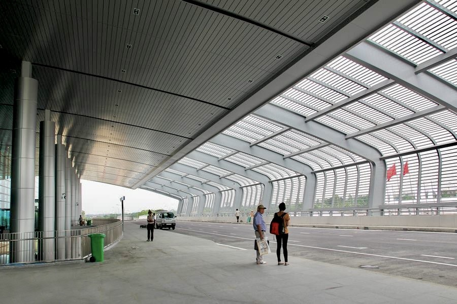
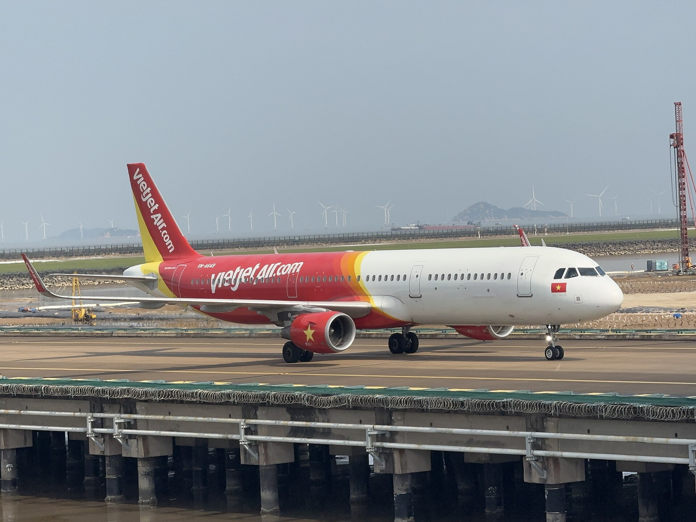
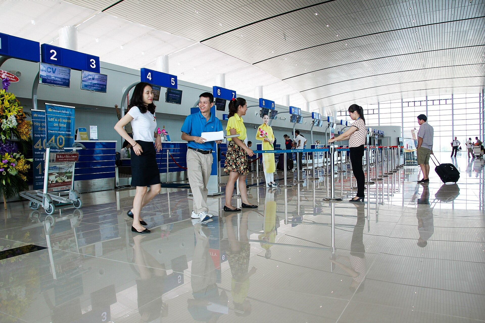
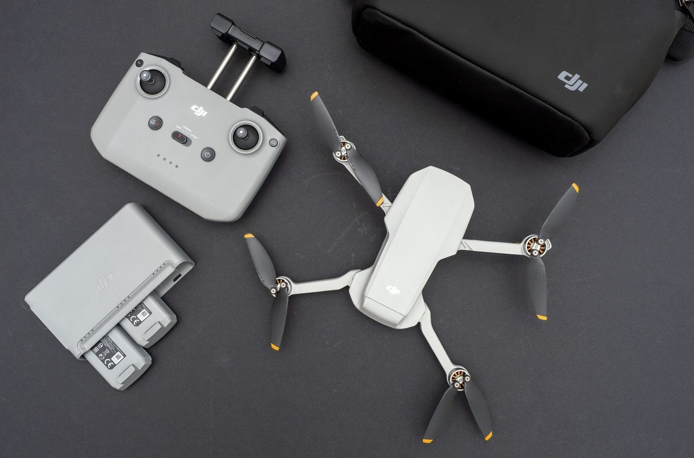
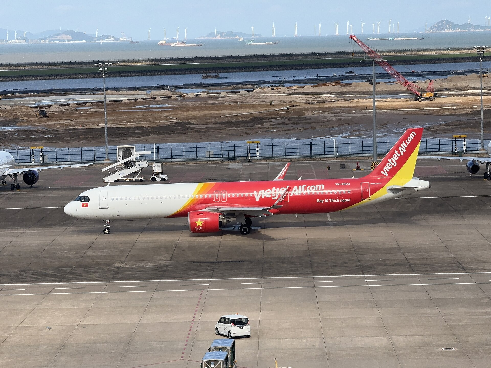

CHECK THE LOCATION
Identify the intended flight location exactly. Check whether it is in a prohibited zone, a restricted zone, or another area with special conditions. Do not estimate. Do not guess by distance from the airport.
Use UAVs, camera drones and other drones responsibly
Help keep every flight safe
SECURE
SAFE
CIVILIZED
WELCOMING

Under Prime Minister Decision No. 18/2020/QĐ-TTg of 10 June 2020, prohibited and restricted flight zones are established to protect national defence, security and the safety of flight operations.
Unauthorised flight operations are not permitted.
For an aerodrome with one runway:
A restricted flight zone is an area where unmanned aircraft and other flying devices must comply with prescribed conditions and limits.
The area adjoining an airport’s prohibited zone is itself a restricted zone. It extends from the prohibited-zone boundary:
Restricted zones also include other areas provided by law, such as airspace above 120 m (except prohibited zones), crowded areas, border areas and other designated areas.
Check the official map to know exactly where you intend to fly.

Administrative areas with territory within prohibited and restricted flight zones around Cat Bi International Airport.
Open the official map ↗
Identify the intended flight location exactly. Check whether it is in a prohibited zone, a restricted zone, or another area with special conditions. Do not estimate. Do not guess by distance from the airport.
The aircraft must meet registration, technical and operating requirements. It must have a valid registration certificate or temporary registration certificate before use.

Maximum take-off mass under 0.25 kg: the operator need not be 18, but must still obey zone rules and must not operate under alcohol, narcotics or other prohibited substances.
From 0.25 kg: the operator must be 18 and hold a visual-line-of-sight remote-pilot licence as required.
From 2 kg, beyond visual line of sight, or under a pre-programmed central controller: an equipment-based licence or a recognised international certificate is required.

Before flying, check the place, altitude, time, control method and the conditions stated in the permit. Fly only as authorised.

Using a UAV, flycam or drone in breach of the rules may lead to administrative fines, criminal liability and compensation, depending on the nature, seriousness and consequences of the act.
Under current rules, examples of fines include:
Certain breaches of registration, conditions, location, time, zone or coordinates.
Aerial filming or photography without authorisation.
Flying not in accordance with the authorised content.
Failing to comply with orders of the competent authority supervising flight operations.
Flying without a required flight permit (equipment may also be confiscated).
Using an unmanned or ultralight aircraft in a way that obstructs or endangers other aircraft.
The exact fine depends on the act and the law in force at the time. Organisations may be fined twice the amount for individuals.
If the act of obstructing air transport constitutes an offence, the person may be prosecuted under Article 278 of the Criminal Code.
Anyone who causes damage may also have to pay compensation under the law.
A small act on the ground can affect an entire flight in the air.
Flight safety can also be affected by:
People living around Cat Bi International Airport must not release kites, balloons, sky lanterns or other high-flying objects into areas that affect aviation, and must not shine lasers or high-intensity lights at aircraft.
If you see a UAV, flycam, drone or unusual airborne object heading towards Cat Bi International Airport, tell the authorities promptly. Do not approach, chase or interfere.
Or the nearest police office, Hai Phong City Police, or authorised units at the airport.
Thank you.